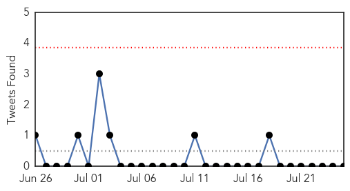
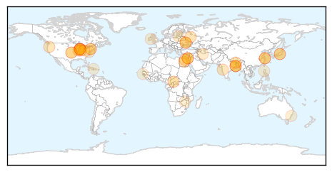
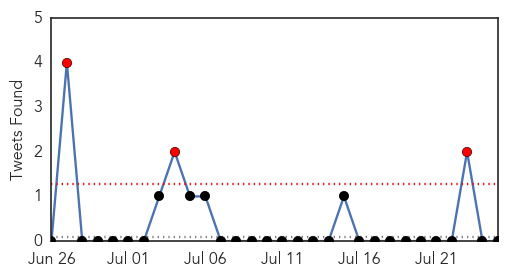

Unknown
30-Day Web Trend
4 alerts, 3 warnings

30-Day Twitter Trend
0 alerts, 0 warnings

Article Locations
Article Confidences
Top Articles:
- 0.971
- Observer
- 0.922
- Encephalitis takes nearly 570 lives; three health officials suspended
- 0.917
- Chicago Tribune
- 0.917
- Chicago Tribune
- 0.917
- Chicago Tribune
- 0.917
- Chicago Tribune
- 0.917
- Chicago Tribune
- 0.917
- Chicago Tribune
- 0.917
- Chicago Tribune
- 0.917
- Chicago Tribune
- 0.917
- Chicago Tribune
- 0.917
- Chicago Tribune
- 0.917
- Chicago Tribune
- 0.917
- Chicago Tribune
- 0.891
- Bengal Encephalitis Toll 113, Mamata Suspends Three Health Officials
- 0.891
- Bengal encephalitis toll 113, Mamata suspends three health officials
- 0.866
- Egypt FM calls for seven-day humanitarian truce in Gaza
- 0.866
- More than 15,000 Russian troops along Ukraine border -U.S. envoy
- 0.866
- Russia says Ukraine shelled across the border with intent to kill law enforcement officers
- 0.822
- Wash produce: 125 sickened by parasite, including in Oregon, in tainted food or water
- 0.800
- Encephalitis toll 111, CM suspends 3 health officials
- 0.800
- Encephalitis toll 111, CM suspends 3 health officials
- 0.783
- Lou Gehrig's Disease Rare, According to New Report
- 0.739
- WHO Calls for Humanitarian Corridor to Transport Gaza's Wounded
- 0.739
- WHO Calls for Humanitarian Corridor to Transport Gaza's Wounded
- 0.702
- Newly-Discovered Ancient Diabetes-Related Gut Virus 'CrAssphage' Lives in Half of World's Population
- 0.697
- Central medical team visits north Bengal
- 0.638
- Farsnews
- 0.637
- WB government suspends 3 health officials
- 0.603
- African swine fever could spread to Poland, warn experts
- 0.590
- WHO seeks to evacuate Gaza wounded
- 0.578
- New gut virus lives in half the world`s population
- 0.575
- Malaria is the leading killer in Central African Republic: aid group
- 0.541
- Doctors say cutbacks are putting lives at risk
- 0.540
- State hospitals run out of vital medicines
- 0.532
- UN health agency seeks Gaza 'humanitarian corridor'
- 0.528
- Too few teens receiving HPV vaccination, CDC says
- 0.527
- Health workers: Philippine healthcare is very sick
- 0.526
- Traditional Indian medicines seized in Sydney
- 0.522
- Newly Discovered Virus Dwells In The Gut Of Half The World's Population
- 0.518
- Malaria is the leading killer in Central African Republic
- 0.515
- Malaria is the leading killer in CAR
- 0.505
- Millennium Development Goal 6: Measuring Progress - World
- 0.501
- Socialist Cuba Exports Health Care, Gains Important Recognition
Top Tweets:
- 0.501
- Messi en juego homenaje a Deco: Se disputó en el estadio do Dagrao, el encuentro amistoso internacional en hom... http://t.co/djgNzfdzF0
Ebola
30-Day Web Trend
10 alerts, 9 warnings

30-Day Twitter Trend
1 alerts, 1 warnings

Article Locations

Article Confidences
Top Articles:
- 1.000
- In Nigeria, Liberian Tests Positive for Ebola
- 1.000
- Ebola Takes First Life In Nigeria
- 1.000
- Top Ebola doctor in Sierra Leone infected with virus
- 1.000
- Ebola virus reaches Nigeria
- 1.000
- Nigeria confirms Liberian man died of Ebola in Lagos
- 1.000
- First Ebola patient from Sierra Leone is on the run
- 1.000
- Potential Outbreak of Ebola in Nigeria
- 1.000
- Infected Ebola woman on the run
- 1.000
- Largest Ebola Outbreak in History Continues to Spread
- 1.000
- Nigeria tests Liberian man for Ebola - Africa
- 1.000
- a ruthless killer reaches Nigeria
- 1.000
- Ebola Outbreak Threatens To Spread With Cases In Freetown, Sierra Leone And Lagos, Nigeria
- 1.000
- Doctor at forefront of fight against Ebola contracts the disease
- 1.000
- Ebola victim in Sierra Leone capital on the run
- 1.000
- Ebola outbreak: Liberian man dies in quarantine in Nigeria
- 1.000
- Ebola outbreak: Liberian man dies in quarantine in Nigeria
- 1.000
- Sierra Leone hunts Ebola patient kidnapped in Freetown
- 1.000
- West Africa Ebola death toll reaches 660: WHO
- 1.000
- Ebola epidemic gets 'Out of Control' in West Africa
- 1.000
- Ebola outbreak: Time to test experimental vaccines?
- 0.999
- Sierra Leone's top Ebola Doctor contracts the virus
- 0.999
- Liberian man in Lagos being tested for Ebola
- 0.999
- First Ebola victim in Sierra Leone capital on the run
- 0.999
- Ebola: a ruthless killer reaches Nigeria
- 0.999
- Advice for Irish travelers updated, as Ebola spreads to Nigeria
- 0.999
- First case of ebola reported in Africa's most populous city Lagos
- 0.999
- West Africa's Ebola outbreak is spiraling out of control
- 0.999
- Ebola Confirmed In Nigerian Capital City Of Lagos; 21 Million City Residents Now At Risk Of Exposure
- 0.999
- Cornering Ebola
- 0.999
- First Ebola Patient From Sierra Leone Capital Is On The Run
- 0.999
- Sahara Reporters
- 0.999
- Ebola outbreak in Sierra Leone has two Morristown volunteers watching, waiting
- 0.999
- Ebola outbreak: Is it time to test experimental vaccines?
- 0.998
- A woman with deadly Ebola virus escapes quarantine, now loose in a city of 1 million
- 0.998
- Man with Ebola-like symptoms dies in Nigeria
- 0.998
- Suspected Ebola patient dies in Lagos
- 0.998
- Nigeria's most populous city reports suspected Ebola virus carrier
- 0.998
- Ebola victim on the run in Sierra Leone
- 0.997
- Fight against Ebola unites Salone politicians
- 0.997
- President of Liberia honors WHO for support in health - Liberia
- 0.996
- Liberian undergoing treatment for Ebola dies in Lagos
- 0.995
- Nigeria government confirms Ebola case in megacity of Lagos
- 0.995
- ONE THIRD TO DIE BY PLAGUE OR FAMINE; ONE THIRD WILL FALL BY THE SWORD; ONE THIRD TO BE SCATTERED TO EVERY WIND
- 0.992
- Nigeria tests for first suspected Ebola case
- 0.992
- Ebola Epidemic Strikes Top Health Worker
- 0.991
- Nigerian Government Confirms Ebola Death In City Of Lagos
- 0.991
- Nigeria government confirms Ebola case in megacity of Lagos
- 0.991
- Nigeria confirms first Ebola death
- 0.990
- Sahara Reporters
- 0.989
- Ebola virus comes to Lagos, Nigeria
Showing top 50 articles...
Top Tweets:
-
No tweets found for Jul 25, 2014